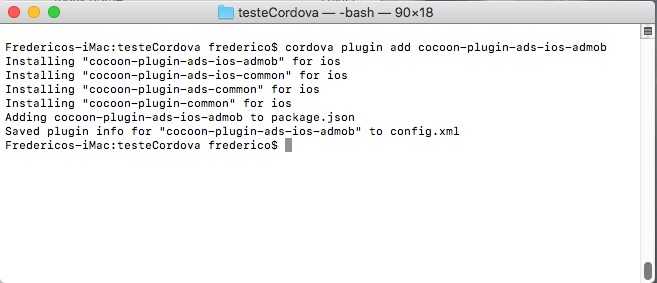

Gerando o projeto Xcode no Mac usando Cordova CLI

Cordova CLI para IOS
Estou partindo do ponto onde seu ambiente esteja todo configurado, Xcode instalado, Node, Cordova, já ter a conta de desenvolvedor
da Apple e também o jogo já exportado pelo Construct 2, caso não tenha feito, verifique na primeira parte que escrevi.
Vamos abordar até a criação do projeto Xcode, assim eliminando a necessidade de algum serviço como Cocoon ou Phonegap Build, que também comentamos no artigo anterior.
Agora preciso enviar os arquivos exportados do Construct 2 para o meu Mac, eu costumo utilizar o Google Drive via
navegador, pois posso apenas arrastar e soltar o arquivo no navegador, que o upload é feito automaticamente, depois eu só preciso logar minha conta no MAC e baixar o arquivo.
Envie o arquivo no formado .ZIP, pois o próprio OSX vai descompactar o arquivo, criando uma pasta com o mesmo nome.
Com o arquivos do projeto no MAC, precisamos entender alguns comandos do terminal, veja neste link os
principais comandos, porém vamos utilizar apenas alguns.
ls mostra a lista de todos os seus arquivos e pastas
cd permite que você vá de um diretório para outro (ex: cd/user/seunome para ir para o seu diretório)
clear limpa a tela, restando apenas a primeira linha
O comando cd .. é usado para ir ao diretório anterior ou sair do diretório atual
Preparando o projeto
Esta imagem é do diretório exportado pelo Construct 2, como podem ver tem apenas os arquivos do projeto e os arquivos de configuração.
Com o terminal aberto, eu usei o comando ls, mostrando os mesmos arquivos pelo terminal.

Agora podemos preparar a plataforma IOS, com o comando
cordova platform add iosCaso queira inserir alguma versão específica do Cordova IOS, é necessário espeficicar a versão. Vale lembrar que a versão atual é 4.5.4, o comando ficaria.
cordova platform add ios@4.5.4
O Cordova vai analisar os arquivos de configuração e instalar os plugins descritos.
Eu coloquei uma seta para mostrar o comando digitado, deixei mostrando todos os outros até o final da instalação da plataforma IOS e os plugins.
Pode usar agora o comando clear para limpar a tela.
Estrutura do projeto após adicionar a plataforma
O proximo comando é para finalmente gerar o projeto Xcode.
cordova build --release
Se já adicionou a plataforma Android no seu projeto, quando for gerar projeto do Xcode, especifique a plataforma no comando, senão será gerado um apk somente
depois o projeto Xcode
cordova build --release ios

Aguarde até concluir o processo de gerar o projeto de Xcode, aparecendo a mensagem de ** BUILD SUCCEEDED **
Pronto, agora você já tem seu projeto Xcode gerado. Abra o Xcode e navege até encontrar o diretório do arquivo de configuração necessário, veja na imagem abaixo.
Aguarde o Xcode terminar de analisar os arquivos.
Concluímos todo o processo desde a geração do projeto no Construct 2, até a geração do projeto Xcode, o restante do processo para enviar para a loja da Apple
não vou abordar.
Caso queira usar ads no projero, veja os passoa abaixo, que é abordado a instalação do plugin.
É necessário inserir manualmente o plugin na plataforma, use o comando abaixo.
Cordova plugin add cocoon-plugin-ads-ios-admob
Com o plugin instado, gere novamente o projeto Xcode.
Clique ADS para exibir detalhes de como configurar e usar